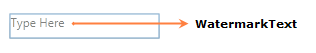

Watermark is the dummy content displayed in the CurrencyTextBox when the value is null. The watermarkText support behavior could be enabled by setting WatermarkTextIsVisible property to True.
|
XAML |
|
<syncfusion:CurrencyTextBox x:Name="currencyTextBox" Width="150" Height="25" WatermarkText="Type Here" WatermarkTextIsVisible="True" WatermarkOpacity="0.5" UseNullOption="True"/> |

Watermark Text automatically collapses when the control is in focus. When the control loses its focus Watermark Text come to visible state if Value is null and WatermarkTextIsVisible is True.
 Using
WatermarkTemplate
Using
WatermarkTemplate